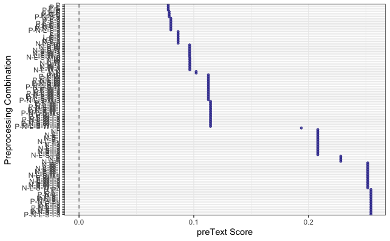

library(tidyverse) # loads dplyr, ggplot2, and others
library(stringr) # to handle text elements
library(tidytext) # includes set of functions useful for manipulating text
library(topicmodels) # to estimate topic models
library(gutenbergr) # to get text data
library(scales)
library(tm)
library(ggthemes) # to make your plots look nice
library(readr)
library(quanteda)
library(quanteda.textmodels)
#devtools::install_github("matthewjdenny/preText")
library(preText)Topic models
SICSS, 2022
Topic modelling notebook
This hands-on exercise focuses on: 1) estimating a topic model ; 2) interpreting and visualizing results.
In this tutorial, you will learn how to:
- Generate document-term-matrices in format appropriate for topic modelling
- Estimate a topic model using the
quantedaandtopicmodelspackage - Visualize results
- Reverse engineer a test of model accuracy
- Run some validation tests
Setup
Before proceeding, we’ll load the packages we will need for this tutorial.
We’ll be using data from Alexis de Tocqueville’s “Democracy in America.” We will download these data , both Volume 1 and Volume 2, and combine them into one data frame. For this, we’ll be using the gutenbergr package, which allows the user to download text data from over 60,000 out-of-copyright books. The ID for each book appears in the url for the book selected after a search on https://www.gutenberg.org/ebooks/.
This example is adapted by Text Mining with R: A Tidy Approach by Julia Silge and David Robinson.

Here, we see that Volume of Tocqueville’s “Democracy in America” is stored as “815”. A separate search reveals that Volume 2 is stored as “816”.
tocq <- gutenberg_download(c(815, 816),
meta_fields = "author")Or we can download the dataset with:
tocq <- readRDS("data/tocq.rds")If you’re working on this document from your own computer (“locally”) you can download the data in the following way:
tocq <- readRDS(gzcon(url("https://github.com/cjbarrie/CTA-ED/blob/main/data/topicmodels/tocq.RDS?raw=true")))Once we have read in these data, we convert it into a different data shape: the document-term-matrix. We also create a new columns, which we call “booknumber” that recordss whether the term in question is from Volume 1 or Volume 2. To convert from tidy into “DocumentTermMatrix” format we can first use unnest_tokens() as we have done in past exercises, remove stop words, and then use the cast_dtm() function to convert into a “DocumentTermMatrix” object.
tocq_words <- tocq %>%
mutate(booknumber = ifelse(gutenberg_id==815, "DiA1", "DiA2")) %>%
unnest_tokens(word, text) %>%
filter(!is.na(word)) %>%
count(booknumber, word, sort = TRUE) %>%
ungroup() %>%
anti_join(stop_words)Joining, by = "word"tocq_dtm <- tocq_words %>%
cast_dtm(booknumber, word, n)
tm::inspect(tocq_dtm)<<DocumentTermMatrix (documents: 2, terms: 12092)>>
Non-/sparse entries: 17581/6603
Sparsity : 27%
Maximal term length: 18
Weighting : term frequency (tf)
Sample :
Terms
Docs country democratic government laws nations people power society time
DiA1 357 212 556 397 233 516 543 290 311
DiA2 167 561 162 133 313 360 263 241 309
Terms
Docs united
DiA1 554
DiA2 227We see here that the data are now stored as a “DocumentTermMatrix.” In this format, the matrix records the term (as equivalent of a column) and the document (as equivalent of row), and the number of times the term appears in the given document. Many terms will not appear in the document, meaning that the matrix will be stored as “sparse,” meaning there will be a preponderance of zeroes. Here, since we are looking only at two documents that both come from a single volume set, the sparsity is relatively low (only 27%). In most applications, the sparsity will be a lot higher, approaching 99% or more.
Estimating our topic model is then relatively simple. All we need to do if specify how many topics that we want to search for, and we can also set our seed, which is needed to reproduce the same results each time (as the model is a generative probabilistic one, meaning different random iterations will produce different results).
tocq_lda <- LDA(tocq_dtm, k = 10, control = list(seed = 1234))After this we can extract the per-topic-per-word probabilities, called “β” from the model:
tocq_topics <- tidy(tocq_lda, matrix = "beta")
head(tocq_topics, n = 10)# A tibble: 10 × 3
topic term beta
<int> <chr> <dbl>
1 1 democratic 0.00855
2 2 democratic 0.0115
3 3 democratic 0.00444
4 4 democratic 0.0193
5 5 democratic 0.00254
6 6 democratic 0.00866
7 7 democratic 0.00165
8 8 democratic 0.0108
9 9 democratic 0.00276
10 10 democratic 0.00334We now have data stored as one topic-per-term-per-row. The betas listed here represent the probability that the given term belongs to a given topic. So, here, we see that the term “democratic” is most likely to belong to topic 4. Strictly, this probability represents the probability that the term is generated from the topic in question.
We can then plots the top terms, in terms of beta, for each topic as follows:
tocq_top_terms <- tocq_topics %>%
group_by(topic) %>%
top_n(10, beta) %>%
ungroup() %>%
arrange(topic, -beta)
tocq_top_terms %>%
mutate(term = reorder_within(term, beta, topic)) %>%
ggplot(aes(beta, term, fill = factor(topic))) +
geom_col(show.legend = FALSE) +
facet_wrap(~ topic, scales = "free", ncol = 4) +
scale_y_reordered() +
theme_tufte(base_family = "Helvetica")But how do we actually evaluate these topics? Here, the topics all seem pretty similar.
Evaluating topic model
Well, one way to evaluate the performance of unspervised forms of classification is by testing our model on an outcome that is already known.
Here, two topics that are most obvious are the ‘topics’ Volume 1 and Volume 2 of Tocqueville’s “Democracy in America.” Volume 1 of Tocqueville’s work deals more obviously with abstract constitutional ideas and questions of race; Volume 2 focuses on more esoteric aspects of American society. Listen an “In Our Time” episode with Melvyn Bragg discussing Democracy in America here.
Given these differences in focus, we might think that a generative model could accurately assign to topic (i.e., Volume) with some accuracy.
Plot relative word frequencies
First let’s have a look and see whether there really are words obviously distinguishing the two Volumes.
tidy_tocq <- tocq %>%
unnest_tokens(word, text) %>%
anti_join(stop_words)Joining, by = "word"## Count most common words in both
tidy_tocq %>%
count(word, sort = TRUE)# A tibble: 12,092 × 2
word n
<chr> <int>
1 people 876
2 power 806
3 united 781
4 democratic 773
5 government 718
6 time 620
7 nations 546
8 society 531
9 laws 530
10 country 524
# … with 12,082 more rowsbookfreq <- tidy_tocq %>%
mutate(booknumber = ifelse(gutenberg_id==815, "DiA1", "DiA2")) %>%
mutate(word = str_extract(word, "[a-z']+")) %>%
count(booknumber, word) %>%
group_by(booknumber) %>%
mutate(proportion = n / sum(n)) %>%
select(-n) %>%
spread(booknumber, proportion)
ggplot(bookfreq, aes(x = DiA1, y = DiA2, color = abs(DiA1 - DiA2))) +
geom_abline(color = "gray40", lty = 2) +
geom_jitter(alpha = 0.1, size = 2.5, width = 0.3, height = 0.3) +
geom_text(aes(label = word), check_overlap = TRUE, vjust = 1.5) +
scale_x_log10(labels = percent_format()) +
scale_y_log10(labels = percent_format()) +
scale_color_gradient(limits = c(0, 0.001), low = "darkslategray4", high = "gray75") +
theme_tufte(base_family = "Helvetica") +
theme(legend.position="none",
strip.background = element_blank(),
strip.text.x = element_blank()) +
labs(x = "Tocqueville DiA 2", y = "Tocqueville DiA 1") +
coord_equal()Warning: Removed 6173 rows containing missing values (geom_point).Warning: Removed 6174 rows containing missing values (geom_text).
We see that there do seem to be some marked distinguishing characteristics. In the plot above, for example, we see that more abstract notions of state systems appear with greater frequency in Volume 1 while Volume 2 seems to contain words specific to America (e.g., “north” and “south”) with greater frequency. The way to read the above plot is that words positioned further away from the diagonal line appear with greater frequency in one volume versus the other.
Split into chapter documents
In the below, we first separate the volumes into chapters, then we repeat the same procedure as above. The only difference now is that instead of two documents representing the two full volumes of Tocqueville’s work, we now have 132 documents, each representing an individual chapter. Notice now that the sparsity is much increased: around 96%.
tocq <- tocq %>%
filter(!is.na(text))
# Divide into documents, each representing one chapter
tocq_chapter <- tocq %>%
mutate(booknumber = ifelse(gutenberg_id==815, "DiA1", "DiA2")) %>%
group_by(booknumber) %>%
mutate(chapter = cumsum(str_detect(text, regex("^chapter ", ignore_case = TRUE)))) %>%
ungroup() %>%
filter(chapter > 0) %>%
unite(document, booknumber, chapter)
# Split into words
tocq_chapter_word <- tocq_chapter %>%
unnest_tokens(word, text)
# Find document-word counts
tocq_word_counts <- tocq_chapter_word %>%
anti_join(stop_words) %>%
count(document, word, sort = TRUE) %>%
ungroup()Joining, by = "word"tocq_word_counts# A tibble: 69,781 × 3
document word n
<chr> <chr> <int>
1 DiA2_76 united 88
2 DiA2_60 honor 70
3 DiA1_52 union 66
4 DiA2_76 president 60
5 DiA2_76 law 59
6 DiA1_42 jury 57
7 DiA2_76 time 50
8 DiA1_11 township 49
9 DiA1_21 federal 48
10 DiA2_76 constitution 48
# … with 69,771 more rows# Cast into DTM format for LDA analysis
tocq_chapters_dtm <- tocq_word_counts %>%
cast_dtm(document, word, n)
tm::inspect(tocq_chapters_dtm)<<DocumentTermMatrix (documents: 132, terms: 11898)>>
Non-/sparse entries: 69781/1500755
Sparsity : 96%
Maximal term length: 18
Weighting : term frequency (tf)
Sample :
Terms
Docs country democratic government laws nations people power public time
DiA1_11 10 0 23 19 7 13 19 15 6
DiA1_13 13 5 34 9 12 17 37 15 6
DiA1_20 9 0 25 13 2 14 32 13 10
DiA1_21 4 0 20 29 6 12 20 5 5
DiA1_23 10 0 35 9 24 20 13 4 8
DiA1_31 7 12 10 13 4 30 18 31 6
DiA1_32 10 14 25 6 9 25 11 43 8
DiA1_47 12 2 5 3 3 6 8 0 3
DiA1_56 12 0 3 7 19 3 8 3 22
DiA2_76 11 10 24 39 12 31 27 27 50
Terms
Docs united
DiA1_11 13
DiA1_13 19
DiA1_20 21
DiA1_21 23
DiA1_23 15
DiA1_31 11
DiA1_32 14
DiA1_47 8
DiA1_56 25
DiA2_76 88We then re-estimate the topic model with this new DocumentTermMatrix object, specifying k equal to 2. This will enable us to evaluate whether a topic model is able to generatively assign to volume with accuracy.
tocq_chapters_lda <- LDA(tocq_chapters_dtm, k = 2, control = list(seed = 1234))After this, it is worth looking at another output of the latent dirichlet allocation procedure. The γ probability represents the per-document-per-topic probability or, in other words, the probability that a given document (here: chapter) belongs to a particular topic (and here, we are assuming these topics represent volumes).
The gamma values are therefore the estimated proportion of words within a given chapter allocated to a given volume.
tocq_chapters_gamma <- tidy(tocq_chapters_lda, matrix = "gamma")
tocq_chapters_gamma# A tibble: 264 × 3
document topic gamma
<chr> <int> <dbl>
1 DiA2_76 1 0.551
2 DiA2_60 1 1.00
3 DiA1_52 1 0.0000464
4 DiA1_42 1 0.0000746
5 DiA1_11 1 0.0000382
6 DiA1_21 1 0.0000437
7 DiA1_20 1 0.0000425
8 DiA1_28 1 0.249
9 DiA1_50 1 0.0000477
10 DiA1_22 1 0.0000466
# … with 254 more rowsExamine consensus
Now that we have these topic probabilities, we can see how well our unsupervised learning did at distinguishing the two volumes generatively just from the words contained in each chapter.
# First separate the document name into title and chapter
tocq_chapters_gamma <- tocq_chapters_gamma %>%
separate(document, c("title", "chapter"), sep = "_", convert = TRUE)
tocq_chapter_classifications <- tocq_chapters_gamma %>%
group_by(title, chapter) %>%
top_n(1, gamma) %>%
ungroup()
tocq_book_topics <- tocq_chapter_classifications %>%
count(title, topic) %>%
group_by(title) %>%
top_n(1, n) %>%
ungroup() %>%
transmute(consensus = title, topic)
tocq_chapter_classifications %>%
inner_join(tocq_book_topics, by = "topic") %>%
filter(title != consensus)# A tibble: 15 × 5
title chapter topic gamma consensus
<chr> <int> <int> <dbl> <chr>
1 DiA1 45 1 0.762 DiA2
2 DiA1 5 1 0.504 DiA2
3 DiA1 33 1 0.570 DiA2
4 DiA1 34 1 0.626 DiA2
5 DiA1 41 1 0.512 DiA2
6 DiA1 44 1 0.765 DiA2
7 DiA1 8 1 0.791 DiA2
8 DiA1 4 1 0.717 DiA2
9 DiA1 35 1 0.576 DiA2
10 DiA1 39 1 0.577 DiA2
11 DiA1 7 1 0.687 DiA2
12 DiA1 29 1 0.983 DiA2
13 DiA1 6 1 0.707 DiA2
14 DiA2 27 2 0.654 DiA1
15 DiA2 21 2 0.510 DiA1 # Look document-word pairs were to see which words in each documents were assigned
# to a given topic
assignments <- augment(tocq_chapters_lda, data = tocq_chapters_dtm)
assignments# A tibble: 69,781 × 4
document term count .topic
<chr> <chr> <dbl> <dbl>
1 DiA2_76 united 88 2
2 DiA2_60 united 6 1
3 DiA1_52 united 11 2
4 DiA1_42 united 7 2
5 DiA1_11 united 13 2
6 DiA1_21 united 23 2
7 DiA1_20 united 21 2
8 DiA1_28 united 14 2
9 DiA1_50 united 5 2
10 DiA1_22 united 8 2
# … with 69,771 more rowsassignments <- assignments %>%
separate(document, c("title", "chapter"), sep = "_", convert = TRUE) %>%
inner_join(tocq_book_topics, by = c(".topic" = "topic"))
assignments %>%
count(title, consensus, wt = count) %>%
group_by(title) %>%
mutate(percent = n / sum(n)) %>%
ggplot(aes(consensus, title, fill = percent)) +
geom_tile() +
scale_fill_gradient2(high = "red", label = percent_format()) +
geom_text(aes(x = consensus, y = title, label = scales::percent(percent))) +
theme_tufte(base_family = "Helvetica") +
theme(axis.text.x = element_text(angle = 90, hjust = 1),
panel.grid = element_blank()) +
labs(x = "Book words assigned to",
y = "Book words came from",
fill = "% of assignments")Not bad! We see that the model estimated with accuracy 91% of chapters in Volume 2 and 79% of chapters in Volume 1
Validation
In this section, we’ll be using the preText package mentioned in @denny_text_2018 to see the impact of different pre-processing choices on our text. Here, I am adapting from a tutorial by Matthew Denny.
First we need to reformat our text into a quanteda corpus object.
# load in U.S. presidential inaugural speeches from Quanteda example data.
corp <- corpus(tocq, text_field = "text")
# use first 10 documents for example
documents <- corp[sample(1:30000,1000)]
# take a look at the document names
print(names(documents[1:10])) [1] "text15825" "text12268" "text17823" "text22967" "text9681" "text10806"
[7] "text12644" "text3778" "text3356" "text24637"And now we are ready to preprocess in different ways. Here, we are including n-grams so we are preprocessing the text in 128 different ways. This takes about ten minutes to run on a machine with 8GB RAM.
preprocessed_documents <- factorial_preprocessing(
documents,
use_ngrams = TRUE,
infrequent_term_threshold = 0.2,
verbose = FALSE)We can then get the results of our pre-processing, comparing the distance between documents that have been processed in different ways.
preText_results <- preText(
preprocessed_documents,
dataset_name = "Tocqueville text",
distance_method = "cosine",
num_comparisons = 20,
verbose = FALSE)And we can plot these accordingly.
preText_score_plot(preText_results)
Exercises
- Choose another book or set of books from Project Gutenberg
- Run your own topic model on these books, changing the k of topics, and evaluating accuracy.
- Validate different pre-processing techniques using
preTexton the new book(s) of your choice.